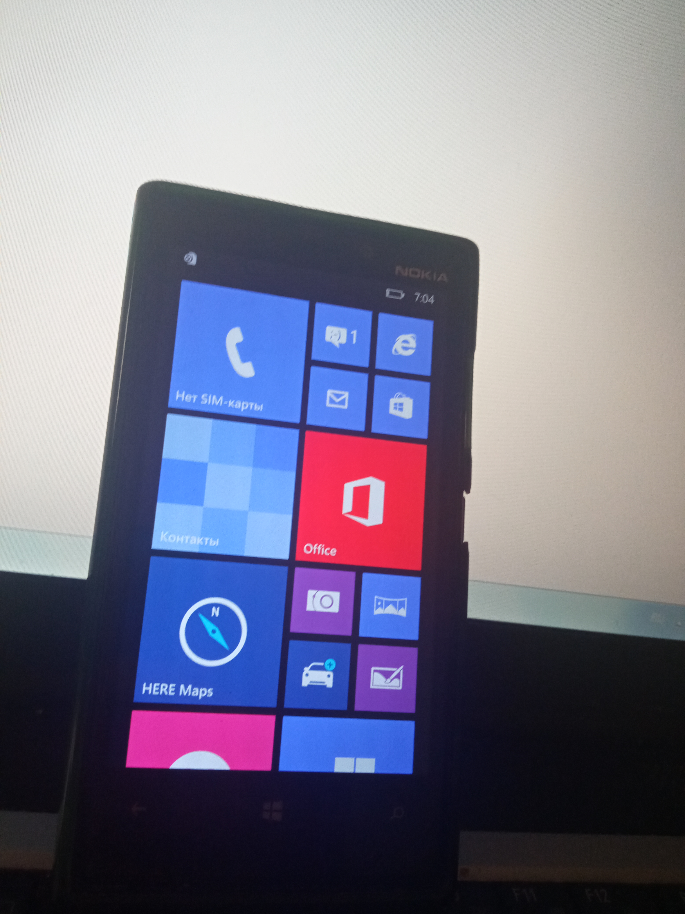

Всем привет, сегодня мы установим Windows 10 ARM32 на телефон Nokia Lumia 920.
Для этого нам понадобится:
1. Заряженный аккумулятор на 100% Nokia Lumia 920 иначе люмия выключится в процессе установки и всё нужно будет начинать заново.
2. Файлы которые будут в конце статьи (Там будут драйвера и либы которые нужно будет поставить). Папку распаковать в корень диска C:\ и весь софт запускать с правами администратора!
3. Терпение и два компьютера с x64 битной системой или виртуальная машина с Windows 10 (Компьютер на котором будем ставить Windows 10 ARM32) и Windows 7 (Компьютер на котором будем разблокировать загрузчик)
Ну что, всё скачали и подготовили? Тогда приступаем к процессе установки.
0. Открываем WDRT и прошиваемся вот по этой инструкции , после загрузки телефона всё оставляем по умолчанию.
1.
1.1 Сначала выключаем телефон и зажимаем кнопку громкости вниз и вкл, и быстро плодключаем к пк. С первого раза может не получится
Запускаем файл WPInternals.exe и заходим в Unlock Bootloader , выбираем всё как на скриншоте и нажимаем Unlock.
После успешной разблокировки будет написано Flashing done. И телефон автоматически загрузится в систему.
Не отходя от кассы, нажимаем Enable Root Access перед этим снова выполнив пункт 1.1 нажимаем Unlock Phone и после появления надписи Root Access Enabled! отключаем телефон от пк и нажимаем ОК.
Подходим к компу с Windows 10 и подключаем тел появится диск MainOS
2. Запускаем файл Driver Downloader.bat и загружаем драйвера для Nokia Lumia 920 после успешной загрузки закрываем софт.
3. Запускаем файл Installer.cmd и выполняем все что пишет на экране. После запуска установки системы
не трогаем ПК чтобы не пришлось начинать всё с начала.
4. После завершения установки загрузите и настройте Windows 10. Не подключайтесь к Wi-Fi при настройке, это приведет к зависанию настройки.
5. Вы завершили установку!
Спасибо всем за прочтение статьи! скачать